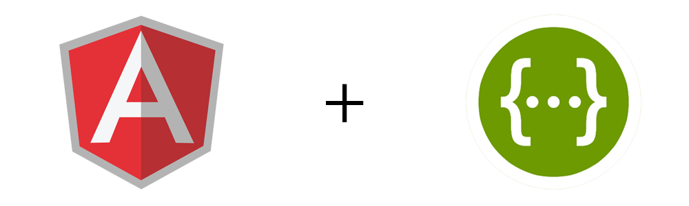

{{appController.api}}
bower install angular-swaggerific
<script src="bower_components/angular/angular.js"></script> <script src="bower_components/angular-simple-sprite/angular-swaggerific.min.js"></script>
angular.module('myApp', ['angular-swaggerific']);
angular
.module('my-app', ['angular-swaggerific'])
.run(function($log, $window, AngularSwaggerific){
/**
* Note that 'swaggerJson' refers to the generated JSON from your Swagger API.
* Visit editor.swagger.io to import your API and generate your JSON file.
*/
var mySwaggerAPI = new AngularSwaggerific($window.swaggerJson);
MySwaggerAPI.{TAG}.{OPERATION_ID}({"id": 1})
.then(function(data) {
$log.log("Success! " + data);
}, function(err) {
$log.log("Error! " + err);
});
});
Creates a new AngularSwaggerific object from a Swagger JSON object.
Arguments
json {Object} - The JSON generated by Swagger. This JSON can be generated using the Swagger Editor.
Returns
Swaggerific API {Object} - Returns an object representation of your provided Swagger API with all endpoints mapped to properties based on API tags, operationIds and methods. This object varies based on how your Swagger API is defined.
Gotchas
It is recommended that you provide a tag and operationId to all of the paths defined in your Swagger API. This way Angular Swaggerific can better construct your Swaggerific API object. If no tag is provided for a given path, then Angular Swaggerific will use the first variable in the path itself. If there are no path variables present, then Angular Swaggerific will default to using the base path. If there is no operationId present, then Angular Swaggerific will default to using the request method (get, post, put, delete, etc).
Tip: Use the API generator above to see exactly how your Swaggerific API is constructed.
Useage
// $window.json is defined elsewhere, and is the JSON generated by Swagger var API = new AngularSwaggerific($window.json);
Communicating with your endpoints using the Swaggerific API is very easy. After you have created your API, each property (based on the tag and operationId of a path) triggers a request to its designated endpoint. Using the Swagger Simple PetStore API (as provided in the Swagger Editior) as an example:
// Initialize my Swaggerific API
var myAPI = new AngularSwaggerific($window.SimplePetStore);
// Let's add a pet
myAPI.pets.addPet({"id": 1})
.then(function(data) {
$log.log("Success! " + data);
}, function(err) {
$log.log("Oops! Something went wrong! " + err);
});